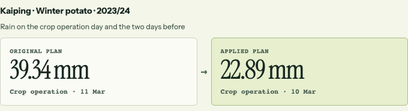

NASA Space Apps 2026 · Field Shift
Next Crop
Which crop fits between rice seasons?
Team Dui Dui DuiGuan Xiao · Lin Yi · Cai Yang · Ye Fenghong
 Kaiping · winter potato · 11 March 2024. Illustrated field replay.
Kaiping · winter potato · 11 March 2024. Illustrated field replay.
The decision
The next rice date sets the deadline.
A winter crop has to finish early enough for field preparation. Wet weather can make a date that fits on paper difficult to use.
- 12 NovLate-rice harvest
- 17 NovPlant winter potato
- 11 MarPotato harvest
- 4 AprEarly-rice transplant
In Kaiping, compare winter fallow, winter potato and Chinese milk vetch.
Data behind the planner
Seven locations.
Three seasons.
- 6,580 NASA POWER daily records across seven sites, with 940 per site.
- Rainfall drives the date check. Minimum temperature appears in the field replay.
- 2021/22, 2023/24 and 2024/25 supply three historical examples.
 NASA Blue Marble supplies the globe. A Copernicus Sentinel-2A image provides Kaiping context.
NASA Blue Marble supplies the globe. A Copernicus Sentinel-2A image provides Kaiping context.
Kaiping · winter potato
The same plan meets different weather.
NASA POWER supplies rain on the harvest day and the preceding two days.
30 mm review threshold
2023/24 · ending 11 Mar39.34 mm
2024/25 · ending 12 Mar0.59 mm
Both values come from regional estimates. The 30 mm threshold is illustrative.
Kaiping · suggested date change · 2023/24
Move late-rice harvest one day earlier.
Original plan39.34 mmPotato harvest · 11 March 2024
→
Adjusted plan22.89 mmPotato harvest · 10 March 2024
Late-rice harvest moves from 12 to 11 November. Early-rice transplant stays on 4 April.
The adjusted plan passes the calendar and rainfall checks in all three sampled seasons.
How to read the result
Calendar, rain and field conditions.
Calendar
Check whether the crop finishes in time for the next rice date, including the assumed preparation buffer.
Rain
Check three-day rain against the illustrative 30 mm threshold in each sampled season.
Field conditions
Enter drainage and soil texture. The planner flags local issues separately from its three-season date check.
Before changing dates, confirm local crop maturity, drainage and equipment access with growers.
Live demo
Try the Kaiping rain demo.
- Open Next Crop and start the demo.
- Apply the suggested date change.
- Replay the operation or inspect all three seasons.
xxyouka.github.io/next-crop

The planner keeps the before-and-after result after you apply a date.